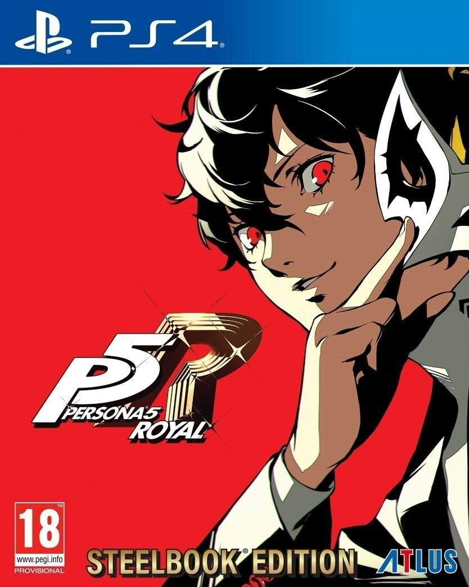
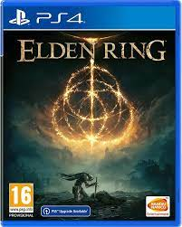
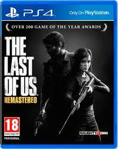

1: Persona 5 Royal

Persona 5: Royal es la versión extendida y mejorada del exitoso videojuego del rol japonés producido por ATLUS para consolas. La quinta entrega tiene ahora una nueva
edición que, si bien nos sigue contando una épica historia en la que un grupo de estudiantes adolescentes tendrán que enfrentarse a una amenaza sobrenatural.
2: Red Dead Redemption 2

Red Dead Redemption 2 es la secuela del videojuego de éxito de Rockstar Red Dead Redemption (2010), considerado como uno de los mejores títulos de la compañía.
Se trata de la tercera entrega de la saga Red Dead.
3: Elden Ring

Elden Ring es el nuevo videojuego de FromSoftware, creadores de Dark Souls, Sekiro o Bloodborne. Se trata del nuevo título de acción y rol para un jugador ideado
por Hidetaka Miyazaki.
4: God of War: Ragnarok

PeGod of War: Ragnarok para PlayStation 5 es la secuela de God of War, el reinicio y a la vez secuela de los anteriores God of War para consolas PlayStation.
Desarrollado por el prestigioso estudio Sony Santa Monica y con la dirección de Cory Barlog.
5: The Last of Us Remasterizado

The Last of Us Remastered para PS4 es una adaptación a la consola de Sony de uno de los mejores juegos de PS3. Esta versión remasterizada contará con mejoras
gráficas respecto al original y con todo el contenido descargable extra lanzado.